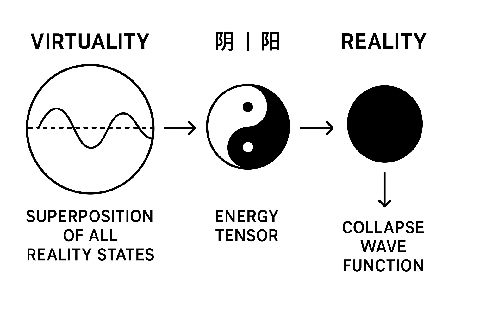
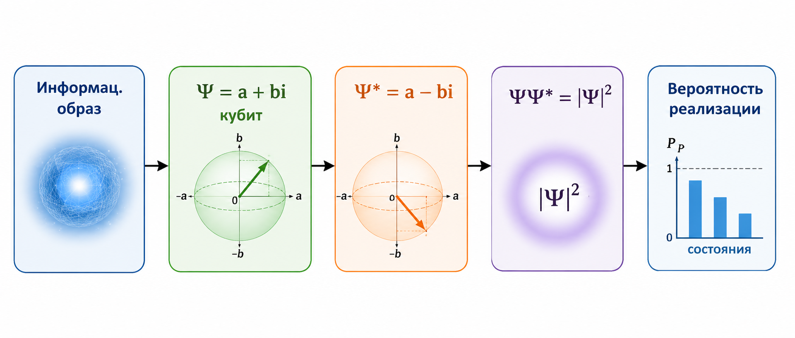

Основные идеи

Информационная декогеренция
Как из информационной потенциальности возникает наблюдаемая реальность?

Правило Борна
Почему вероятности квантовой механики могут иметь информационную природу?
Информационное поле
Почему информационное поле является первичной информационной структурой?

Новые статьи
Информационная декогеренция и время
Изменение скорости процессов в квантовой физике
Краткий справочник по ключевым понятиям информационной модели.
Связь с квантовой механикой
О книге
Книга объединяет философию сознания, информационный подход и современную квантовую механику в рамках единой информационной модели реальности.